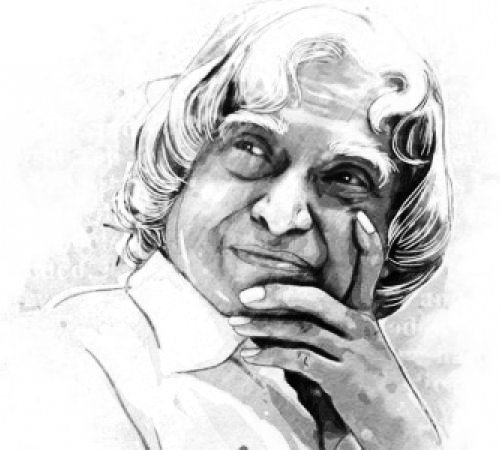

Dr A.P.J. Abdul Kalam
Aerospace Scientist, 11th President of INDIA
You have to dream before your dreams can come true.
- Dr. APJ Abdul Kalam

Dr. Avul Pakir Jainulabdeen Abdul Kalam (15 October 1931 – 27 July 2015) was an Indian aerospace scientist and politician who served as the 11th President of India from 2002 to 2007.
His Notable Awards are:
- 1981 Padma Bhushan
- 1990 Padma Vibhushan
- 1997 Indira Gandhi Award of National Integration
- 1997 Bharat Ratna
- 1998 Veer Savarkar Award
- 2000 Ramanujan Award
- 2007 King Charles II Medal
- 2009 Hoover Medal
- 2009 International von Kármán Wings Award
- 2011 IEEE Honorary Membership